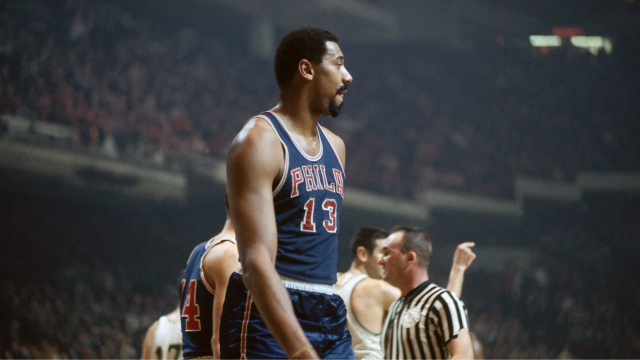

The Philadelphia 76ers is an Amercan professional basketball team. The Philadelphia franchise has won a total of three National Basketball Association (NBA) championships and has advanced into the finals on nine occasions. The Philadelphia 76ers who are commonly known for their nickname, the "sixers", are the oldest franchise in the National Basketball Association. The Philadelphia team was founded in 1939 in Syracuse, New York. In 1946 they joined the National Basketball League(NBL), which then in 1949 the NBL merged with the Basketball Association of America to form the NBA.
Championship years:
- 1955
- 1967
- 1983
Philadelphia 76ers have a total of 8 retired jerseys, one being a microphone. These jerseys are never to be worn again in franchise history as a tribute to the amount of success that player contributed to Philadelphia. These players include Charles Barkley, who had his number 34 retired on March the 30th, 2001. Maurice Cheeks, who had his number 10 retired on February the 6th, 1995. Wilt Chamberlin, who had his number 13 retired on March the 18th, 1991. Julius Erving, who had his number 6 retired on the 18th of April, 1988. Bobby Jones, who had his number 24 retired on the 7th of November, 1986. Billy Cunnigham, who had his number 32 retired on December the 17th, 1976. The finale player, Hal Greer, had his number 15 retired on the 19th of November, 1976. The Philadelphia franchise also retired a microphone for David Zinkoff, due to him announcing for the Philadelphia 76ers for 22 seasons (1963-1985).
